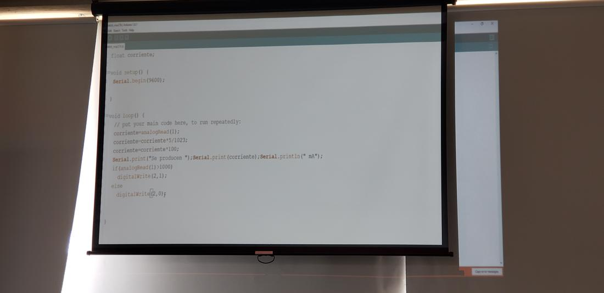
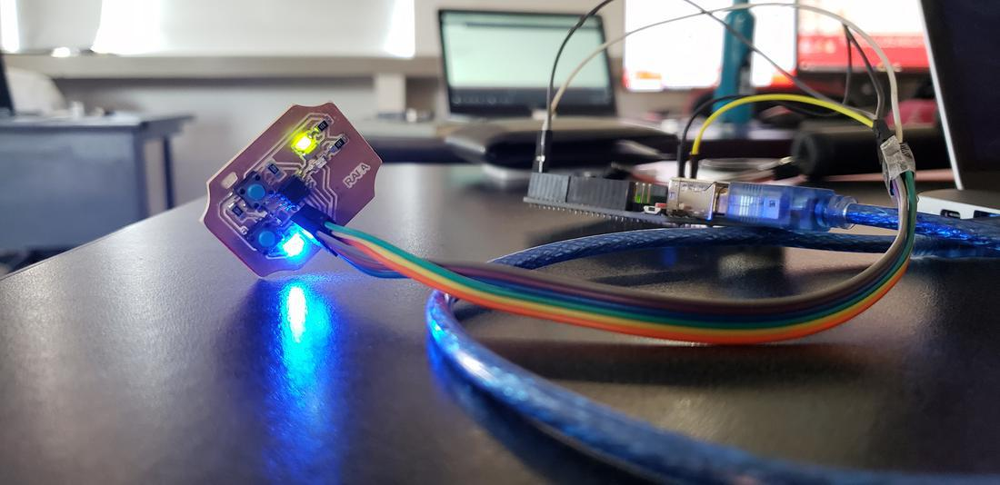
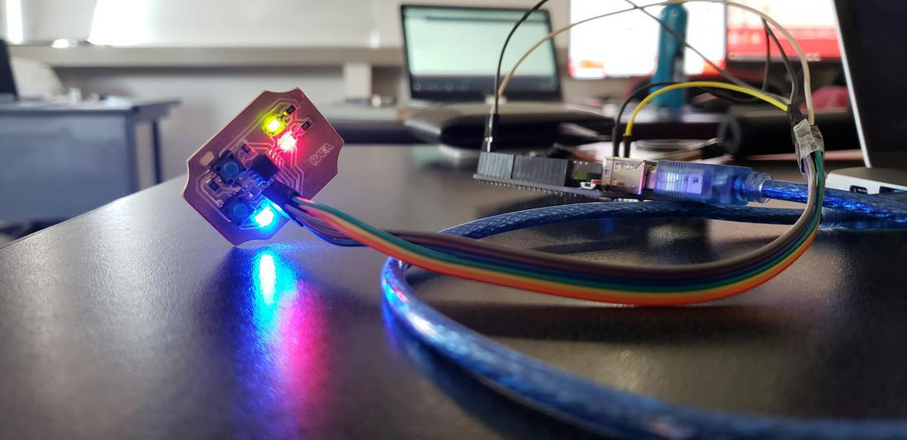
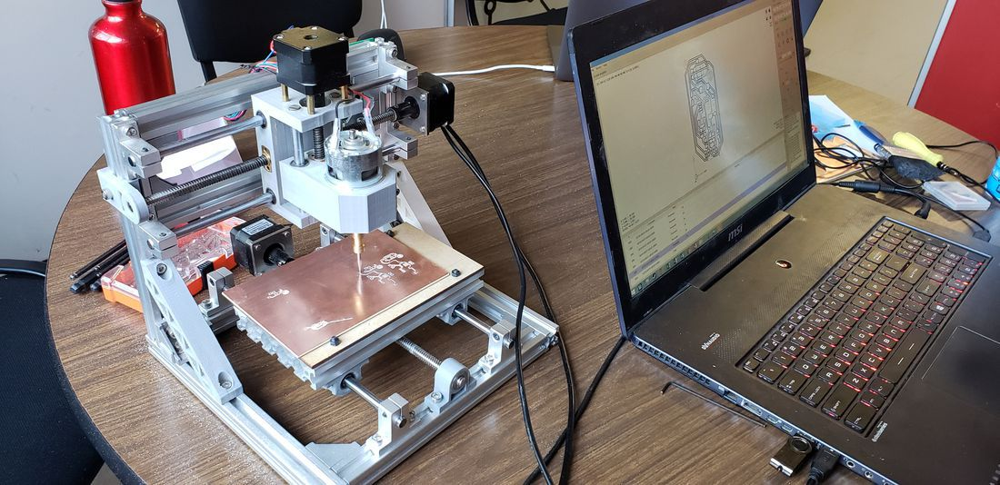
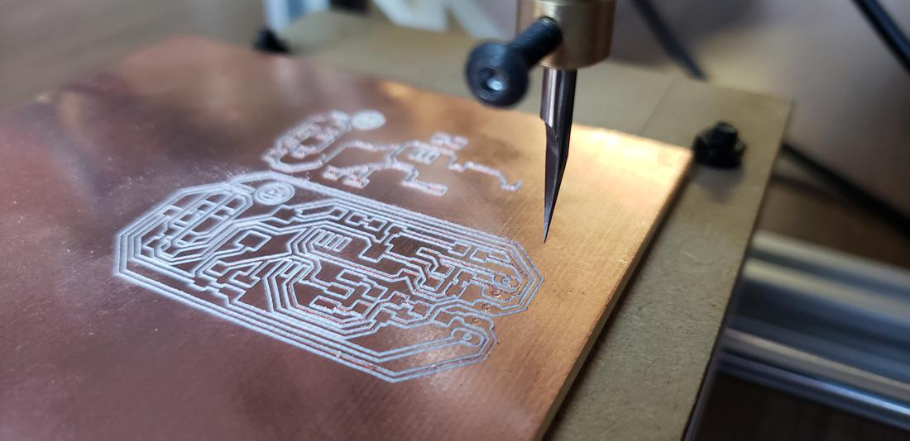
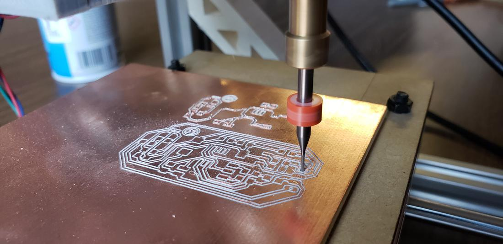
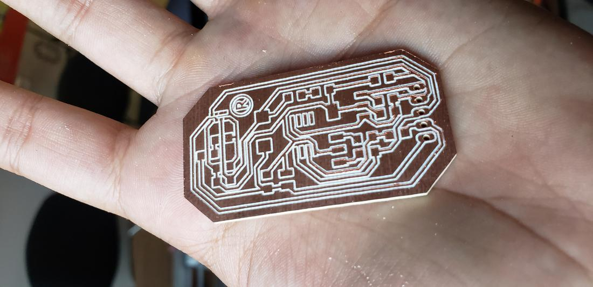
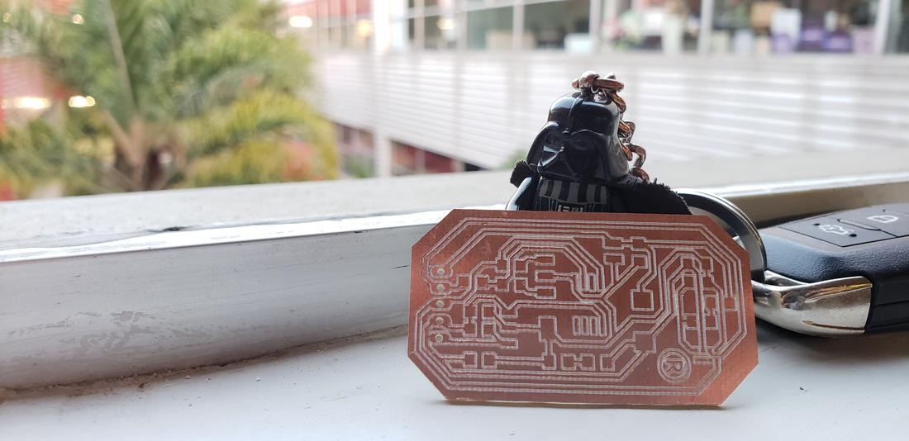
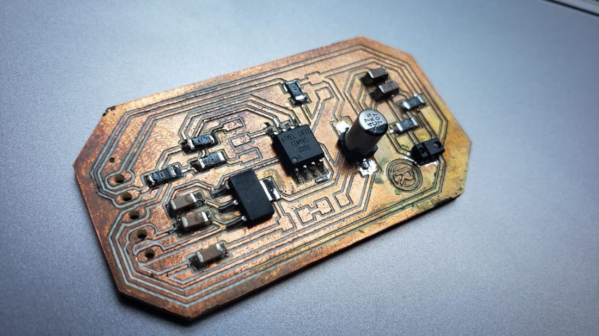

The signal //
For the input devices we use the Serial library in the Arduino IDE, which will be able to transmit through the serial port TX and RX with a serial communication speed of 9600 bits per second (baud), established by us, and that we can establish other speeds.
With the analogRead () instruction we can obtain the analog reading, which converts the voltage into bits.
To get analog conversion:
- 5V - 1023
- 2.5V -512
With all this in mind, we made a small program

Since my board has attiny45, use the SoftwareSerial library, which emulates serial communication through software. The idea was to use the keyboard of my macbook as an input device, by pressing the A key to turn on a led. The code of this is shown below.
#include
#define RX 1 // *** PB1, MISO
#define TX 0 // *** PB0, MOSI
const int ledPin2 = 2;
char c;
SoftwareSerial mSerial(RX, TX);
void setup() {
// ***
// *** Initialize the Serial port
// ***
mSerial.begin(9600);
mSerial.println("Initializing...");
pinMode(ledPin2, OUTPUT);
}
void loop() {
// put your main code here, to run repeatedly:
//mSerial.println("Que tranza");
//delay(1000);
if (mSerial.available())
c = mSerial.read();
if (c == 'a'){
digitalWrite(ledPin2, HIGH);
delay(1000);
}
else
digitalWrite(ledPin2, LOW);
}


 13.00.57.png)
The magic //
The keyboard already counts as an input device, but it is not a sensor. Thinking about my final project, the desktop elevation control does not want to be a simple switch or button, so researching and thinking a bit, remember a sensor that made fashionable the Samsumg S5 phone, which incorporated a gesture sensor hand in hand This sensor is the APDS-9960, developed by Avago technologies, which is a sensor of Digital Proximity, Ambient Light, RGB and Gesture Sensor.
The APDS-9960 is a serious little piece of hardware with built in UV and IR blocking filters, four separate diodes sensitive to different directions, and an I2C compatible interface.
This sensor operates with 3.3V
Buy two sensors, since it is too small, smaller than the 1206 dimensions of the surface components that had been soldered so far.
Navigating on the Sparkfun page, I found the sensor, the datasheet, an example and the schematic.
Download the schematic to see the insides of the sensor and so try to replicate it with my components. Design in Eagle and try to incorporate such sensor fused with the attiny controller.
I had many problems to be able to accommodate all the components.
The components that I added to my schematic were the following.


 15.40.38.png)
 2.27.57.png)
 2.28.39.png)
After generating the file, load it in fabmodules to generate the cutting and engraving files to later weld the components.





At the time of welding, I realized that my design had a fatal error, I lacked pins to be able to program it. Sadly I thought that it would only be a nice copper plate, however it was still possible to rescue it, bypassing the attiny pins, a not very good but functional solution.

Finally, it was necessary to program it, to do so, download and install the library provided by Sparkfun. Load the examples that this library had and it worked very well, but the only example I needed was the one of gestures of the hand, that is, to be able to detect the movements of right, left, up, down, near and far.